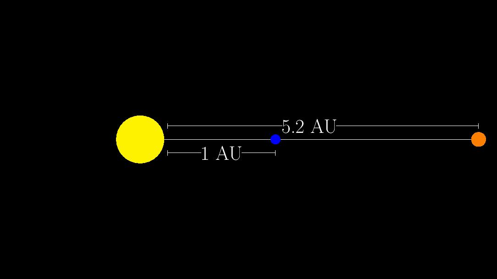

You Can Weigh Jupiter
Welcome to You Can Weigh Jupiter! In this lab, we will be observing Jupiter at opposition.
Opposition is when Jupiter is opposite the Sun in the sky. The geometric configuartion of opposition is shown below:

Based on the diagram, how far is Jupiter from Earth (in AU) in the configuration?